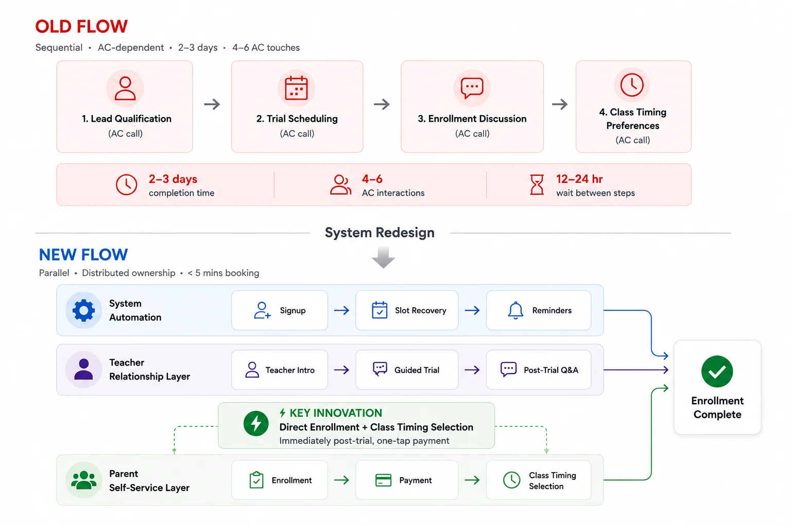
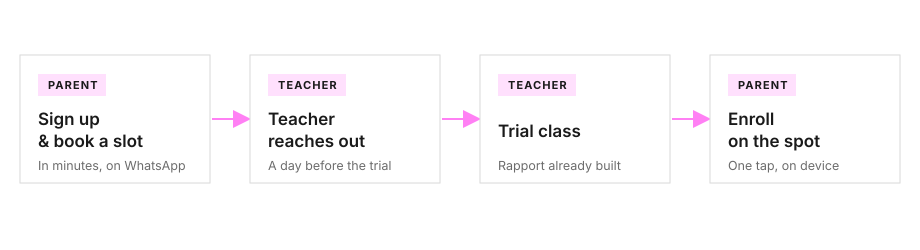
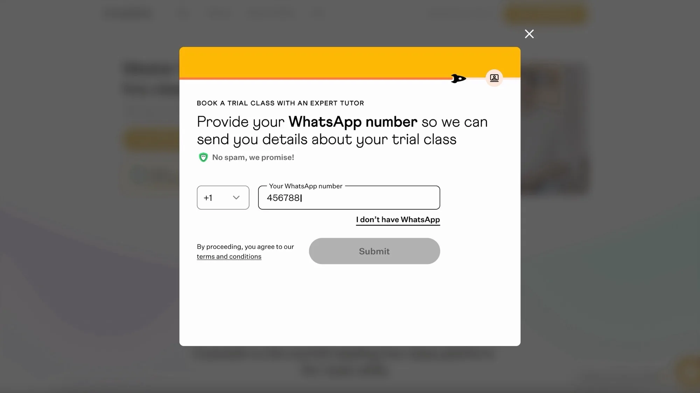
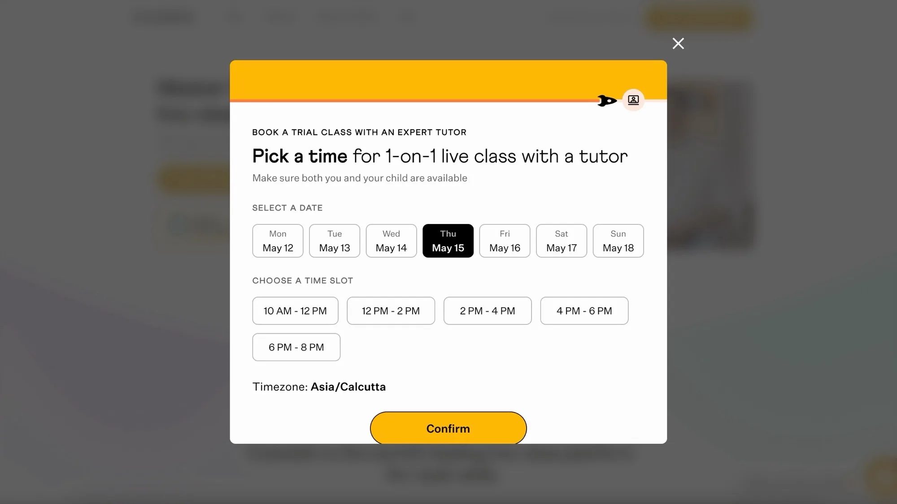
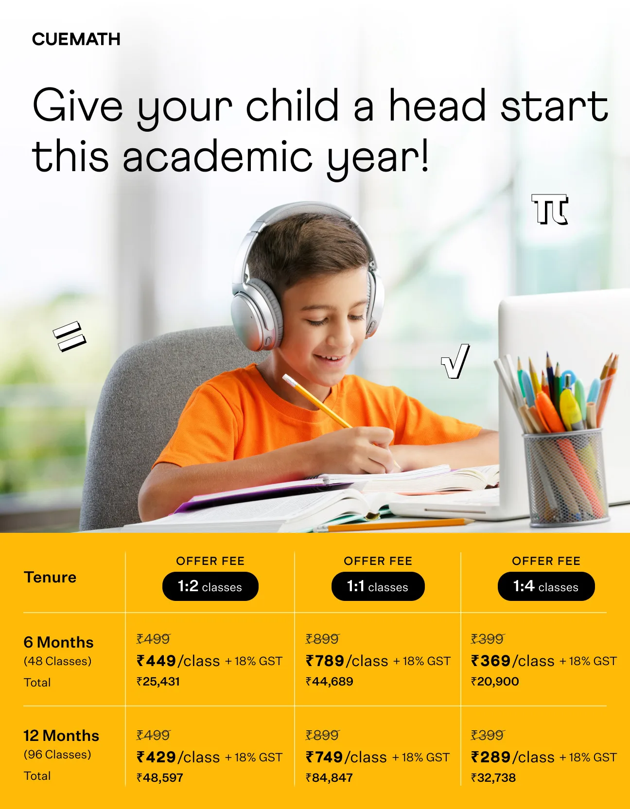
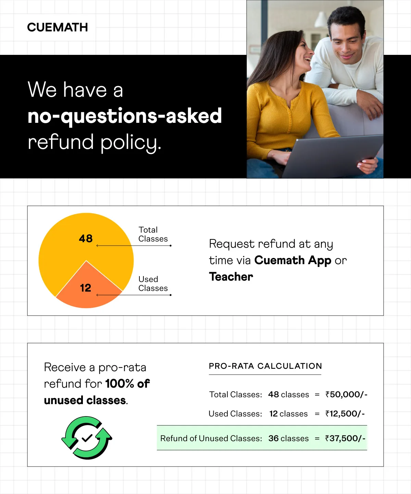
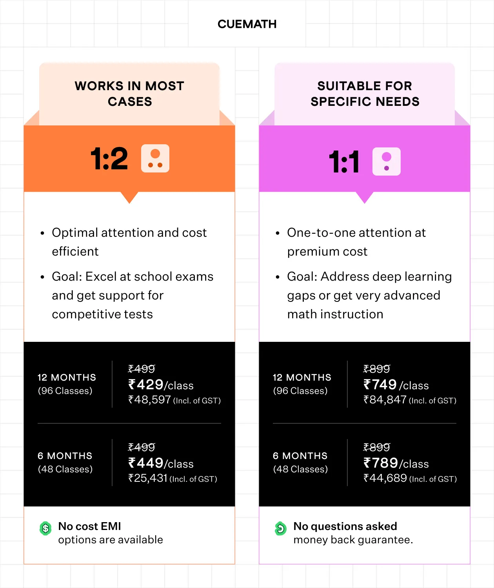
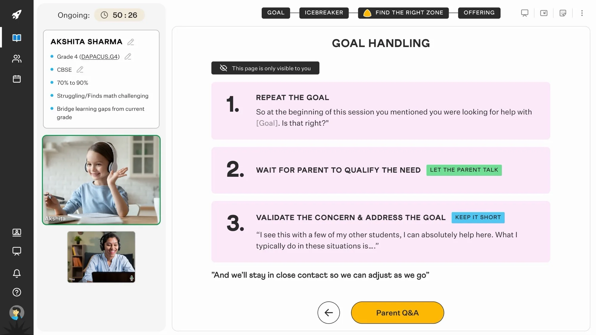

The problem
A parent's interest in Cuemath had a shelf life — it peaked at sign-up and faded with every wait that followed. But the funnel leaned on an AC at every step: qualification, booking, follow-up, enrollment. The full journey dragged across 2–3 days, and the data showed the cost — 40% of qualified leads didn't book within 24 hours, and 35% of trial-takers didn't enroll within three days, both stuck waiting on a callback.
And it wasn't the team's fault. Every parent was one of dozens an AC juggled that day, and on Cuemath's thin margins, hiring more to move faster wasn't viable. The funnel wasn't failing because the team was — the process put them in too many places at once.

Old: every step routed through AC, with 12–24h waits between each. New: work distributed across system, teacher, and parent — ACs handle exceptions only.
Role
I owned the trial funnel end-to-end — from a parent's first sign-up to their paid enrollment, tied directly to business targets.
- End-to-end UX/UI — sign-up form, slot booking, teacher intro flow, in-trial parent surface, post-trial enrollment, feedback flows
- Communication design — the WhatsApp-led messaging system and the post-trial collateral
- Cross-functional collaboration — PM (Business Head, India) on scope and metrics, FE + BE engineers on build; tutor matching algorithm sat under a separate team, I designed around it
How it works
A parent signs up and books a trial slot in minutes, entirely over WhatsApp. Their assigned teacher reaches out the day before, runs the trial, and the moment it ends, the parent enrolls right there on their device — no callback, no queue, no AC in the loop.

The system runs reminders and routing underneath — ACs step in only for exceptions.
Open in Figma →Decisions
01WhatsApp as the spine, with automated recovery
WhatsApp was set by the brief — most teacher-parent conversation already lived there. The design problem was making it carry the whole funnel. Every critical step — verification, slot booking, teacher intro, reminders, post-trial enrollment — ran on WhatsApp, with SMS and email as fallbacks. A 5-minute auto-message fired for parents who started booking but didn't finish.


After the trial, teachers shared branded messages covering pricing, formats, and refund policy — post-trial follow-up became teacher-led.



02Teacher as trust anchor, before and during the trial
The initial direction had teachers owning everything — testing across 22 trials showed it broke lesson quality. So we narrowed their role to the trust moments only. Instead of an AC confirmation, parents got a WhatsApp message from their assigned teacher 24 hours before — name, credentials, sometimes a short video. Rapport began a day early, not after the session ended. 89% of teachers sent it in rollout — pre-session trust became the norm.
During the trial, teachers had a reference script — used only when parents asked. The parent pulls; the teacher doesn't push. Class formats came up naturally, never as a pitch.

03Direct enrollment immediately after the trial, with teacher present
The moment the session ended, parents saw an enrollment interface on their device — three plan options, pricing visible, one-tap payment. Captures the decision while they're still in the moment, not days later. No AC required; the teacher was still there for questions.
A secondary win: removing ACs also removed the ad-hoc discounts (10–25%) they offered when sensing a slipping lead — parents paid standard price, and revenue per enrollment held.
Impact
AC intervention
−70%
reduction in AC touchpoints while maintaining lead-to-enrollment conversion — the primary objective of the brief.
Lead → Trial
+50%
Trial booking collapsed from 48–72h (AC callback) to under 5 min (WhatsApp slot picker). 78% completed slot booking within 24h vs. ~40% before.
Trial → Paid
+9.6%
Parents enrolled in the moment with the teacher present, instead of waiting days for an AC callback.
All three held in the weeks after launch, and the team absorbed rising trial volume without adding ACs. What I didn't get to measure was the longer arc — whether parents who self-served, without an AC's nudge, stayed enrolled as long as the old high-touch funnel kept them. If I ran it again, that's the first thing I'd instrument.
Lessons
The shift was distribution, not optimization
The breakthrough wasn't making any one role faster — it was distributing the work so no single role broke under the next. Optimization squeezes the bottleneck; distribution removes it. That's the lens I'd carry into any "do more with less" brief.
Validate assumptions before you invest five weeks in design
I spent five weeks building the teacher-led hypothesis before testing it — one honest 30-minute conversation in week one would have killed it on the spot. I lost weeks executing something a quick check would have caught. My rule now: any hypothesis that touches live-session behavior gets validated in week one, before any design.
The constraint became my filter: build trust, capture intent, or cut it
The 70% AC reduction mandate forced clarity: every step in the flow had to either build trust or capture intent. If it did neither, it was friction — cut it. That forced me to stop designing features and start designing a system. I'd take this lens to any optimization brief — translate the constraint into a design question, not a feature list.